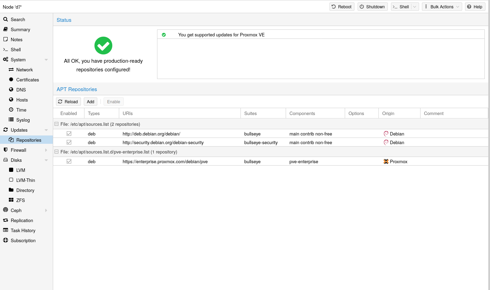

3. 호스트 시스템 관리 및 운영#
Proxmox VE는 Debian GNU/Linux를 기반으로 하며, 추가 레포지토리를 통해 Proxmox VE 관련 패키지를 제공합니다. 즉, 보안 업데이트 및 버그 수정을 포함한 모든 범위의 Debian 패키지를 사용할 수 있습니다. Proxmox VE는 우분투 커널을 기반으로 하는 자체 Linux 커널을 제공합니다. 필요한 모든 가상화 및 컨테이너 기능이 활성화되어 있으며 ZFS 및 몇 가지 추가 하드웨어 드라이버가 포함되어 있습니다.
3.1. 패키지 레포지토리
Proxmox VE는 다른 Debian 기반 시스템과 마찬가지로
Proxmox VE는 매일 패키지 업데이트를 자동으로 확인합니다.
3.1.1. Proxmox VE의 레포지토리
레포지토리는 소프트웨어 패키지의 모음으로, 새 소프트웨어를 설치하는 데 사용할 수 있을 뿐만 아니라 새 업데이트를 받는 데도 중요합니다.
NOTE
최신 보안 업데이트, 버그 수정 및 새로운 기능을 받으려면 유효한 Debian 및 Proxmox 레포지토리가 필요합니다.
APT 레포지토리는 /etc/apt/sources.list 파일과 /etc/apt/sources.list.d/에 있는
레포지토리 관리

Proxmox VE 7부터는 웹 인터페이스에서 레포지토리 상태를 확인할 수 있습니다. 노드 요약 패널에는 개략적인 상태 개요가 표시되며, 별도의
레포지토리 활성화 또는 비활성화와 같은 기본적인 레포지토리 관리도 지원됩니다.
sources.list 파일
선호하는 소스가 가장 먼저 나와야 하며, 빈 줄은 무시됩니다.
/etc/apt/sources.list 파일
deb http://deb.debian.org/debian bookworm main contrib
deb http://deb.debian.org/debian bookworm-updates main contrib
# security updates
deb
http://security.debian.org/debian-security bookworm-security main contrib
Proxmox VE는 세 가지 패키지 레포지토리를 제공합니다.